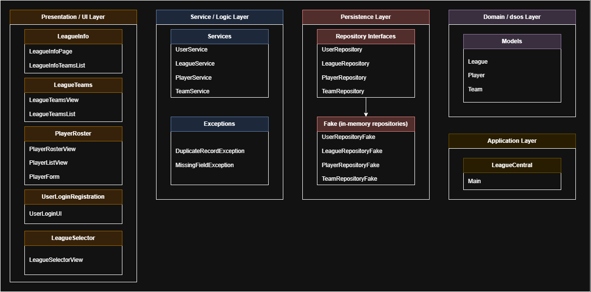
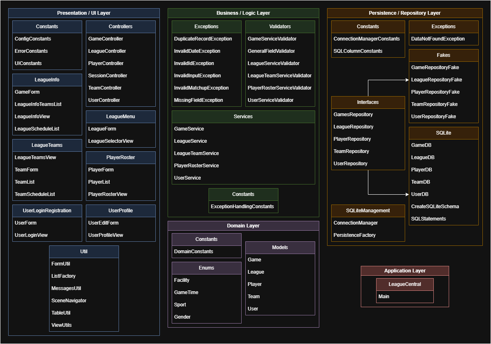

Project Overview
What is League Central?
League Central is a desktop application that centralizes recreational sports league management into one place. Organizers of community basketball, soccer, volleyball, and intramural leagues today juggle spreadsheets, paper records, and group chats to track schedules, rosters, teams, and results — a process that is slow, error-prone, and stressful.
League Central replaces that patchwork with a single structured system: create a league, build its teams, register players, schedule games at real facilities, and record results that automatically update each team's win/loss record.
Our goal: make recreational league management more organized, accessible, and less time-consuming — measured by the time organizers save on admin work and the accuracy of their league information.
🎯 Target Users
Recreational sports organizers, league administrators, and amateur coordinators (ages 18–50) who run community leagues, school intramurals, and local tournaments alongside work and school — and need admin tasks to take minutes, not evenings.
🛠️ Built With
- Java 21
- JavaFX
- Gradle
- SQLite
- JUnit 5
- Mockito
- TestFX
- JaCoCo
The Product
Major Features
Accounts & Sessions
Register a new organizer account, log in with validated credentials, edit your profile, and log out — sessions are managed cleanly across the whole app.
League Management
Create leagues with a sport, description, and season dates, then browse them in a card-based selector. Each league has its own info page tying everything together.
Teams & Standings
Add teams with a coach and captain to any league. Every team tracks its win/loss record, which updates automatically as game results are recorded.
Player Rosters
Register players with name, age, and gender, assign them to teams, and browse the full league roster in a sortable table — with duplicate detection and field validation.
Game Scheduling
Schedule games between two teams at a chosen facility, date, and time slot. View the schedule per league or per team so everyone knows where to be.
Result Recording
Record the winner and loser of each matchup. Team records update instantly, keeping the league's competitive picture accurate all season.
Product Demonstration
See It In Action
A screen recording of the final system — not mockups — walking through the primary user flows below.
Primary User Flows Demonstrated
Register & Log In
Create an account, log in, and land on the league selector. Invalid credentials and missing fields are caught with clear error messages.
Create a League & Teams
Set up a new league with its sport and season, then add teams with coaches and captains.
Build the Roster
Add players to the league, assign them to teams, and browse the roster table.
Schedule & Record Games
Create a matchup with a facility and time slot, then record the result and watch the standings update.
The Team
Who Built It
Five developers, clearly defined roles, and work divided by strengths — with everyone contributing across features, testing, and documentation.
Francesca Carino
Contributions: Project coordination (leading meetings and delegating tasks), code reviews, managing the GitLab issue board, developing features such as player creation and team management, refactoring implementations such as the presentation layer.
Skills gained: Learned JavaFX, Gradle, Mockito and integration testing, software layered architecture, identifying and ensuring SOLID principles and applying design patterns.
Ryan Teranishi
Contributions: Peer review, helped with teaching Git and our team Git standards, database schema implementation and maintenance.
Skills gained: Learning and applying SOLID principles, design pattern implementation (Factory, Strategy, etc.).
Ruitian Fan
Contributions: Developed the league UI and related logic. Mainly responsible for the testing side of the project, including end-to-end tests and integration tests.
Skills gained: Learned JavaFX, TestFX, JaCoCo, Mockito, and SOLID principles, along with how to design architecture and how to collaborate within a team.
Stephert Pinto
Contributions: Developed the user login functionality and contributed to the player management workflow, including player update and delete features. Refactored parts of the business layer to improve exception handling, validation, and adherence to SOLID principles. Added test coverage through fake repository tests, Mockito unit tests, and SQLite integration tests.
Skills gained: Learned JavaFX UI development, Mockito and integration testing, Git branching and merge workflows, layered architecture, dependency injection, exception handling strategies, and practical application of SOLID principles. Improved my ability to identify design issues such as tight coupling, duplicated logic, and misplaced responsibilities.
Muhammad Zamn
Contributions: Created unit tests using fake repositories to verify business-layer functionality. Refactored the presentation layer to improve maintainability, reduce duplicated code, and better follow SOLID principles. Implemented user creation and registration features, added sign-out functionality, and developed tests to verify the new features.
Skills gained: Learned JavaFX development and gained a stronger understanding of layered architecture and how the presentation, business, and persistence layers interact. Improved my testing skills through unit testing with fake repositories and strengthened my knowledge of SOLID principles, refactoring, dependency injection, and Git workflows including branching, merge requests, and code reviews.
Engineering
How the System Evolved
Our system has evolved greatly from Iteration 0. Throughout our development, we refactored much of our code base to recognize any SOLID principles that were being violated, as well as using our knowledge about design patterns to identify places we can implement them. The diagrams below tell the story.


Key Architectural Decisions
Repository Pattern from Day One
All data access goes through repository interfaces. We started with in-memory HashMap fakes to iterate quickly on domain models and UI, then swapped in SQLite implementations in Iteration 2 — behind the same repository interfaces, exactly as planned in the PRD. The strongest validation of this decision.
Strict Four-Layer Separation
Presentation → Business → Domain → Persistence. Business logic lives in services, input rules live in dedicated validator classes, and custom exceptions (DuplicateRecordException, InvalidMatchupException, …) carry errors to user-friendly alerts. The tradeoff: more files and boilerplate, but every bug had an obvious home.
Keeping Fakes After the Database Arrived
We kept the fake repositories alongside SQLite so logic tests stay fast and deterministic, while integration tests exercise the real database. The same interfaces serve both — one abstraction paying off twice.
Desktop-First Scope
In Iteration 0 we pivoted from "SportsMeet," a social event-discovery app, after realizing its social features needed networking beyond the project's local-machine scope. Choosing a self-contained league manager kept every iteration shippable.
Scene Navigator
Centralizes page changes to make it simpler. Tradeoff: had the risk of becoming a "God Class".
Validators in Service Layer
Leaving it out of JavaFX forms ensured SRP and made it more reusable.
Controllers
Splitting responsibilities into SessionController, LeagueController, TeamController to reduce coupling between views and services. Tradeoff: more setup in Main.
Combining Create/Edit Forms
Using one form class with editMode for create and update screens. Tradeoff: reduced duplicate UI code, but increased conditional logic inside the form.
Separating Utilities/Constants
Using ViewUtils, MessagesUtil, ConfigConstants, UIConstants, etc. Tradeoff: less repeated code and styling, but utilities can become cluttered if overused.
Development Reflection
What We Learned the Hard Way
Our issue board didn't match what the milestone actually required. Features and user stories were vague enough that development bottlenecked while we reverse-engineered the Milestone 1 board mid-iteration. Instructor feedback confirmed the misalignment, and poor time planning meant last-minute changes were still landing on submission day.
- Branch per user story, bug, or tech-debt item instead of one branch per feature — producing smaller, more frequent merge requests so the iteration dev branch stayed current for dependencies.
- Labels for bugs, dev tasks, and tech debt to keep milestones organized and honest.
- Tests written alongside features, not after — plus a dedicated Discord channel for merge requests so everyone participated in code review.
- Soft deadlines at least a day before submission, reserving the final day for cleanup only, and the first days of each iteration for refactoring based on feedback.
Iteration 2 delivered our riskiest change — migrating the entire persistence layer from in-memory fakes to SQLite — alongside league and team creation features. The Iteration 2 retrospective records the payoff directly: after the dedicated refactoring days, the codebase followed SOLID principles noticeably better; integration and unit testing improved, with more tests created overall; and with no more mock data, the full workflow could finally be explored end-to-end. Per-story branching kept the dev branch current as planned, and consistent logging of time spent on tasks made our estimates and progress tracking more accurate.
Technical Deep Dive: Refactoring Two SRP Violations
One major issue that was identified was two instances of SRP violations. In particular, we had two files, those being BusinessValidator.java and SceneNavigator.java, both of which were major violations of the Single Responsibility Principle due to the fact that each respectively had too much functionality that could be broken down, leading to low cohesion. Although both were created for convenience, one being a localized file for all validation methods, and the other for easy navigation through the application, the designs for both were flawed due to their SRP violations.
Our change was simple: break down each file into logical pieces that would minimize the amount of refactoring elsewhere. For the BusinessValidator, we made the decision to break this down into 6 files, 5 of which were service specific (i.e. GameService → GameServiceValidator, LeagueService → LeagueServiceValidator), and the final was a GeneralFieldValidator that contained methods that would be used by all other validation files. Regarding the SceneNavigator, this file was previously injected with all services that were all publicly accessible through getters, since the SceneNavigator was injected into every page. This file was also used to navigate through all of our different pages, setting the scene of a page when needed. Our first change was to remove access to all services by removing the public getters, and replacing the services with controllers. These controllers would then be passed into pages, therefore only giving each page the required controller(s) and nothing more. Our second change was to ensure that the SceneNavigator had one job: navigate through our different pages.
As of now, our current code base uses this new implementation of the validation and scene navigation. Going through our repository, these changes were made later in development, but were a crucial part of our refactoring process as these were major violations of SRP.
✅ What Worked Well
- Fast, consistent communication — agreed response times (4h weekdays, 30min near deadlines) were actually honored.
- Our transition from branching for features to user stories. At the beginning of development we branched off our develop branch by feature, but if another developer is dependent on your work, they would either need to branch off your working branch containing unreviewed code, or wait until your work has been peer reviewed, fixed and merged. This bottleneck would have been more evident in Iteration 3, as we had multiple moving pieces that needed to be implemented for others to use. By branching by user stories, we could merge our work more often and increase our development efficiency by minimizing the bottleneck.
- The repository abstraction made the database migration nearly painless.
- Work was distributed by scope, availability, and comfort level, and it stayed balanced across iterations.
- Twice-weekly in-person meetings with documented action items kept five schedules aligned.
- Recovering from the Iteration 0 project pivot in days, not weeks.
⚠️ What Didn't
- Underspecified user stories early on cost us real development time.
- Big design decisions were sometimes made quickly and rethought later — more upfront discussion would have been cheaper.
- Finishing initial development too close to submission was a recurring theme — even in Iteration 2 we wished we had wrapped up a day earlier to leave room for proper testing and polish.
🧪 Testing Strategy
- Logic tests against fake repositories for fast feedback.
- Mockito tests isolating each service from its dependencies.
- Integration tests against the real SQLite database.
- End-to-end TestFX tests driving the actual JavaFX UI (login, registration, league creation) — added as a direct action item from the Iteration 2 retro.
- After Iteration 2, merge request reviews covered both the code and the running application, catching functional issues code reading alone would miss.
- JaCoCo coverage reports with a ≥80% line-coverage target kept us honest.
🧾 Remaining Debt & Limits
- Something we considered was to remove our files with the suffix "List" and create a builder class that would effectively create these components. Investigating these files, they all have a similar goal: create a component containing a table. These files could be replaced using a builder that constructs the component, rather than having multiple files with the only changes being small differences in how the table is constructed.
If We Started Over
One thing our team took away from this project is that good architecture and testing pay off more the longer a project runs. Early on, it was easy to just focus on getting features working. But by Iteration 3, having a layered architecture and multiple testing strategies already in place made new features noticeably easier to build. Knowing we had fake repository tests, Mockito tests, and integration tests gave us real confidence when making changes across different parts of the system.
If we were starting over, we would do a few things differently. The biggest one is planning more thoroughly upfront, putting more thought into implementation details before writing any code, and fleshing out more concrete user stories and features so we had a clearer picture of what we were building from the start. A lot of our refactoring work stemmed from requirements feeling vague early on.
We would also push to implement complete CRUD functionality earlier rather than spending so much time on create and view before getting to update and delete. Building smaller but fully complete features would have helped us catch design issues sooner and kept the app feeling more usable throughout development.
On top of that, our team agreed we would think harder upfront about what logic could be separated into its own class or file. We ended up with duplicated code that had to be cleaned up later, and applying DRY from the beginning rather than as a cleanup step would have saved us a fair amount of time across iterations.
Overall, if we were to start over, we would plan our project more thoroughly with more thought on the implementation to create more concrete user stories and features. And in terms of development, we could have put in more thought on things that we could separate out as separate files early on to reduce duplication and lessen the need to refactor for it.